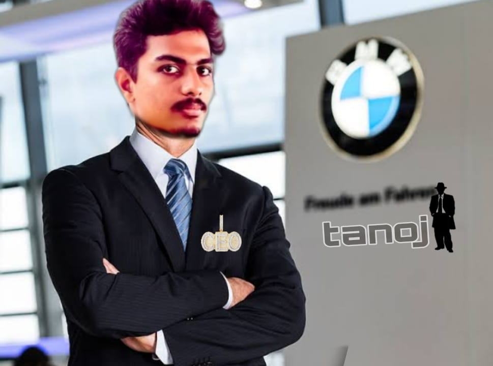

CHIKKALA SAI
EAT FIVE STAR DO NOTHING
ABOUT
CH SAI 2 September 1968 or 1971[n 1]) is an Indian politician, actor,
filmmaker, and philanthropist. He works in Telugu cinema and is the recipient of a Filmfare Award, a SIIMA Award, a CineMAA Award and a Santosham Film Award. He has featured in Forbes India's Celebrity 100 list in the years 2013, 2017, and 2018.[5] He is also the founder of Jana Sena Party.
Kalyan is the younger brother of actor Chiranjeevi, and made his debut in the 1996 film Akkada Ammayi Ikkada Abbayi.
He starred in Tholi Prema in 1998, which won the National Film Award for Best Feature Film in Telugu that year. Referred to as "Power Star" by his fans, Kalyan is known for films such as Suswagatham (1998), Tholi Prema (1998), Thammudu (1999), Badri (2000), Kushi (2001), Jalsa (2008), Gabbar Singh (2012), Attarintiki Daredi (2013), and Bheemla Nayak (2022).[6] He received the Filmfare Award for Best Actor – Telugu for Gabbar Singh while Attarintiki Daredi held the record of being the highest-grossing Telugu film.[7][8] He produces films under the banners Anjana Productions and Pawan Kalyan Creative Works.[9]
In 2008, Kalyan entered into politics as the president of youth wing of Praja Rajyam Party, founded by his brother Chiranjeevi. He left the party after it merged into the Congress party. In March 2014, Kalyan founded Jana Sena Party.[10][11] During that period, he was listed by Google as the most searched Indian celebrity politician on Google Search.[12] He is also known for his philanthropic work.[16] He founded a charitable trust called Common Man Protection Force (CMPF) for helping the needy people in Andhra Pradesh.[17][18] He holds a black belt in karate and specializes in various martial arts which he depicts in his films regularly.
MY PORTFOLIO
Some of my best projects so far.PERSONAL BLOG - A blog where I pen my own thoughts on programming
TIC TAC TOE - Complete Tic Tac Toe game along with GUI using Java
TIME TABLE GENERATOR - A web application for automatic time table generation
MY SKILLS
- Raise
- Serve
- Fight